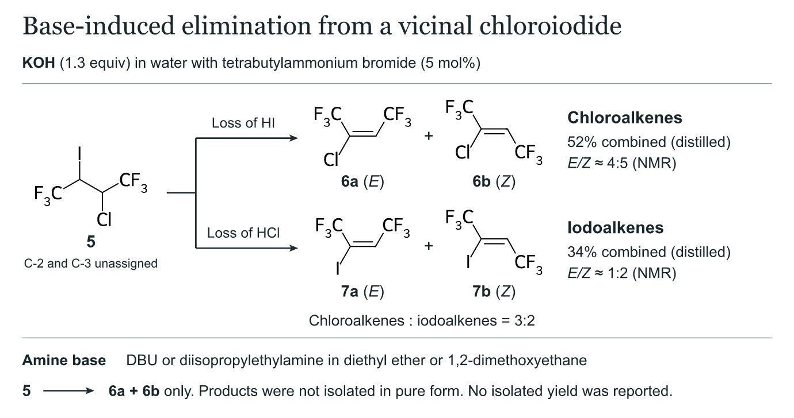
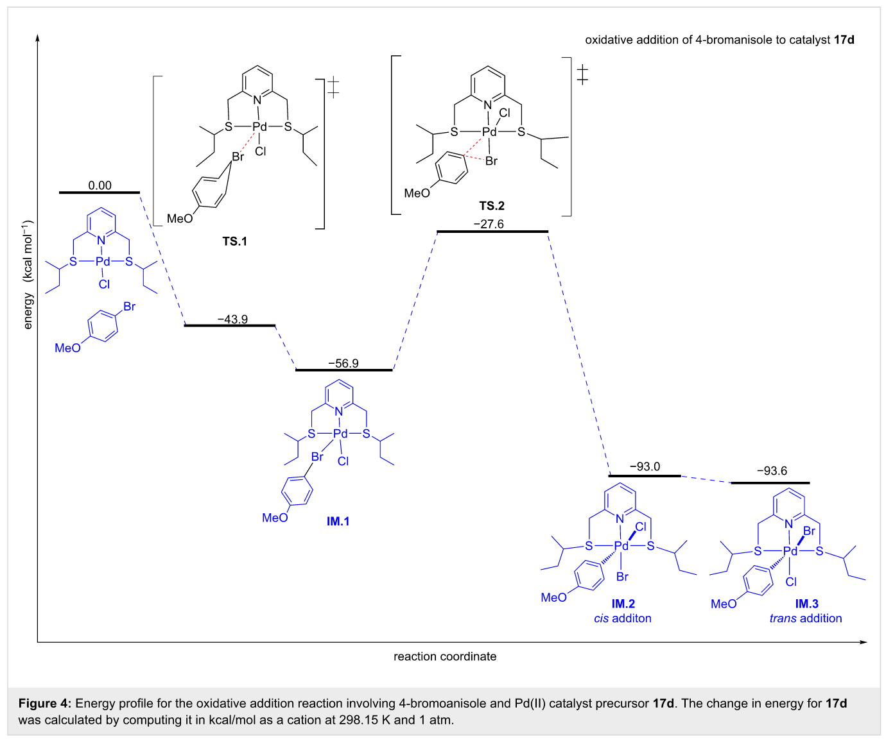
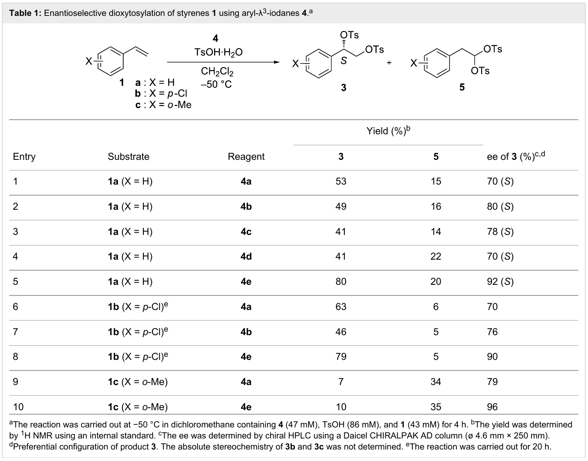
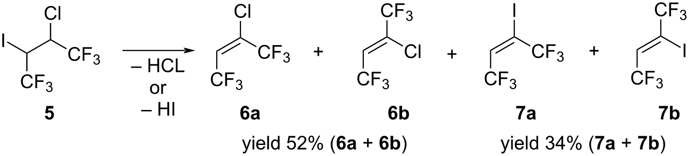
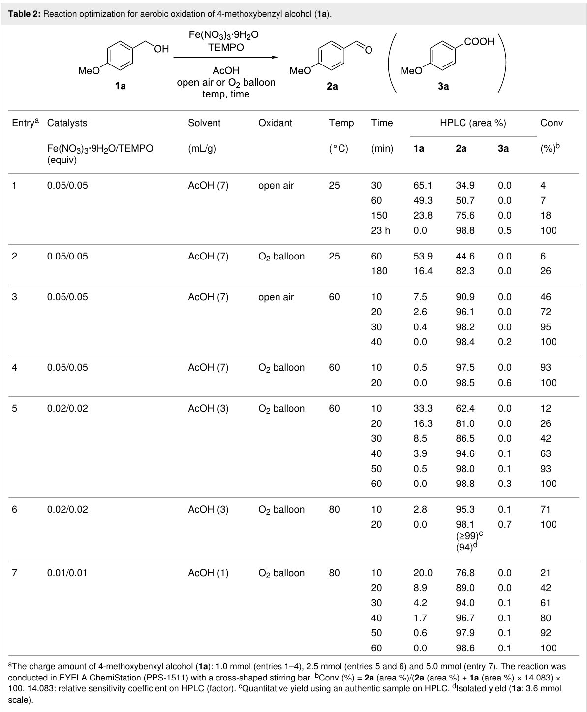
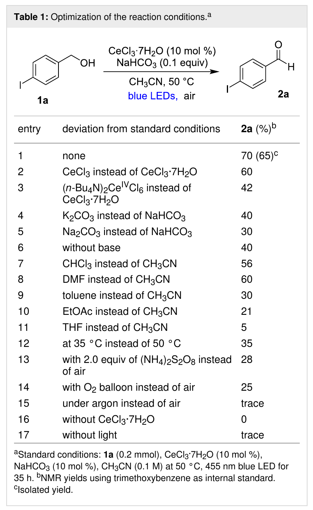
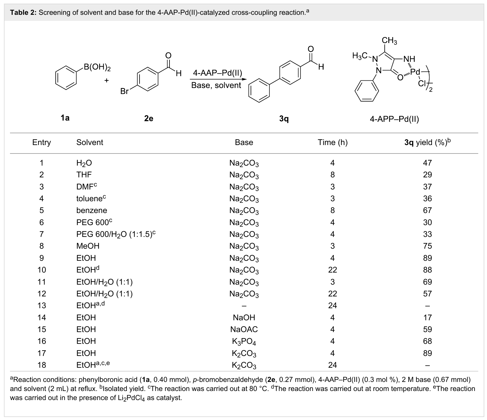
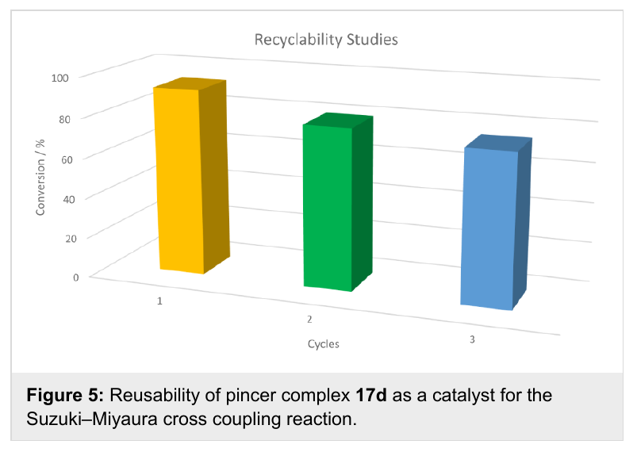
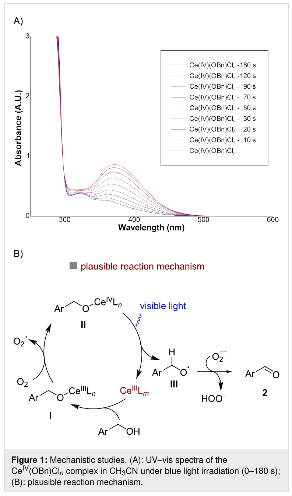

Organic chemistryFigure benchmark
Drawing journal figures
with agents
Compare structures, experimental values and layout in the published figure, an agent’s direct SVG and a Chem Canvas rendering.
- Cases
- 16
- Source papers
- 8
- Data-only cases
- 4
Fiebor et al. · 2018Scheme 2
A proposed palladium catalytic cycleView case ↗
Featured cases
All 16 cases
Reaction scheme Kirij et al. · 2024
Assigning four E/Z alkenes
Check alkene geometry and CF₃ labels.↗

Structure table Fujita et al. · 2018
Product stereochemistry and OTs labels
Inspect nine structures across three experiments.↗

Energy profile Fiebor et al. · 2018
Energy changes in oxidative addition
Compare structures, energy levels and the caption.↗
Case catalog
Filter by what the agent saw. Each thumbnail shows the published figure. Open a case to switch between drawings and inspect the review.

Table 1 · 2018Regioselectivity and ee in styrene dioxytosylationData only

Scheme 5 · 2024Two elimination pathways and four E/Z alkenesData only

Table 2 · 2023Eight time points in a batch oxidationData only
Reaction mechanism · 2018Proposed catalytic cycle for palladium cross-couplingRedraw from image / Data only

Substrate scope · 2014Coupling scope of aryl halides and arylboronic acidsRedraw from image

Condition screening · 2021Screening conditions for benzyl alcohol photooxidationRedraw from image

Condition screening · 2018Optimizing an aqueous Suzuki–Miyaura couplingRedraw from image

Condition screening · 2024Optimizing a thiazolopyridine synthesisRedraw from image

Substrate scope · 2021Substrate scope of benzyl alcohol photooxidationRedraw from image

Condition screening · 2014Solvent and base screening for Suzuki–Miyaura couplingRedraw from image

Experimental chart · 2018Reusing a pincer catalyst over three cyclesRedraw from image

Energy profile · 2018Computed energy profile for oxidative additionRedraw from image

Multistep synthesis · 2013Multistep synthesis of ochnaflavoneRedraw from image

Selectivity · 2021Selectivity in the competitive oxidation of two alcoholsRedraw from image

Reaction mechanism · 2024Proposed cyclization mechanism for thiazolopyridinesRedraw from image

Spectra and mechanism · 2021Time-resolved absorption spectra and proposed mechanismRedraw from image